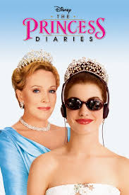

.jpg)
"Mean Girls" bercerita tentang Cady Heron, seorang remaja yang baru pindah dari Afrika dan memasuki sekolah menengah atas di Amerika untuk pertama kalinya. Di sana, ia bertemu dengan sekelompok gadis populer yang dikenal sebagai "The Plastics," yang dipimpin oleh Regina George. Meskipun awalnya Cady berusaha untuk beradaptasi dan mencari teman , ia akhirnya terjebak dalam dinamika sosial yang rumit dan penuh intrik di antara The Plastics. Cady mulai memanipulasi situasi untuk mengalahkan Regina dan mendapatkan tempat di puncak hirarki sosial sekolah. Namun, ia segera menyadari bahwa permainan ini memiliki konsekuensi yang tidak terduga dan dapat merusak hubungan serta integritasnya sendiri.
Film ini menyajikan komedi satir tentang kehidupan sosial di sekolah menengah dengan pesan mendalam tentang persahabatan, kepercayaan diri, dan dampak perilaku toksik.
.jpg)
."Little Women" mengikuti kisah empat saudari—Meg, Jo, Beth, dan Amy March—yang tumbuh di Amerika Serikat pada akhir abad ke-19. Film ini, diadaptasi dari novel klasik karya Louisa May Alcott, menggambarkan perjalanan hidup mereka dari masa remaja hingga dewasa, mengeksplorasi tantangan, impian, dan hubungan mereka dengan keluarga dan masyarakat.
Meg adalah yang tertua dan paling konvensional, Jo adalah penulis bersemangat yang bertekad mengejar kariernya, Beth adalah saudari yang lembut dan penyayang, dan Amy adalah yang paling muda, dengan ambisi artistik dan keinginan untuk status sosial. Melalui suka dan duka, mereka menghadapi berbagai kesulitan pribadi dan sosial, termasuk perjuangan ekonomi, cinta, dan kehilangan. Film ini menyoroti kekuatan ikatan keluarga dan pentingnya tetap setia pada diri sendiri di tengah berbagai tantangan hidup.
3.Legally blonde

"Legally Blonde" mengikuti Elle Woods, seorang mahasiswi mode yang ceria dan bergaya dari California. Ketika pacarnya, Warner, memutuskan hubungan dengan Elle karena ia merasa Elle tidak cukup serius dan cerdas untuk menjadi pendampingnya di Harvard Law School, Elle memutuskan untuk membuktikan kemampuannya dengan masuk ke sekolah hukum tersebut.
Meskipun awalnya dianggap tidak sesuai dan diremehkan, Elle menggunakan keahliannya dalam mode dan intuisi sosial untuk menangani berbagai tantangan akademis dan hukum. Selama perjalanannya, Elle menemukan bahwa dia memiliki bakat dan kekuatan yang lebih dari sekadar penampilan luar, serta menemukan tujuan dan kepercayaan diri baru. Film ini adalah komedi yang mengangkat tema tentang keberanian, kecerdasan, dan menantang stereotip.
4.Clueless
.jpg)
"Clueless" adalah komedi remaja yang mengikuti kehidupan Cher Horowitz, seorang remaja kaya dan populer di Beverly Hills. Cher, yang dikenal karena penampilannya yang stylish dan gaya hidup yang glamor, sangat menikmati perannya sebagai "pembantu sosial" di sekolahnya, berusaha untuk membantu teman-temannya menemukan cinta dan kebahagiaan.
Namun, ketika Cher mencoba untuk mencocokkan dua orang teman barunya dan memperbaiki kehidupan sosial mereka, ia mulai menyadari bahwa tidak semua perencanaan dan manipulasi sosialnya berjalan seperti yang diinginkan. Selain itu, ia juga mulai mempertanyakan pandangannya tentang cinta dan kebahagiaan dalam hidupnya sendiri. Film ini menampilkan humor yang cerdas dan satir tentang kehidupan remaja di kalangan kelas atas, sambil menyoroti pelajaran tentang pertumbuhan pribadi dan hubungan yang tulus.
5.The Princess Diaries
"The Princess Diaries" bercerita tentang Mia Thermopolis, seorang remaja biasa yang tinggal di San Francisco bersama ibunya. Hidup Mia berubah drastis ketika dia mengetahui bahwa dia adalah pewaris sah takhta kerajaan Genovia, sebuah negara kecil di Eropa.
Dengan bantuan neneknya, Ratu Clarisse Renaldi, Mia harus belajar tentang etiket dan tanggung jawab kerajaan untuk mempersiapkan dirinya menjadi seorang putri. Selama prosesnya, Mia menghadapi berbagai tantangan, mulai dari perubahan gaya hidup yang dramatis hingga kesulitan dalam beradaptasi dengan status barunya. Film ini menggabungkan elemen komedi dan drama, mengisahkan perjalanan Mia dalam menemukan jati dirinya dan belajar tentang keberanian serta tanggung jawab.
Series
The Baby Sister Club

"The Baby-Sitters Club" mengikuti sekelompok sahabat remaja—Kristy Thomas, Mary Anne Spier, Claudia Kishi, Stacey McGill, dan Dawn Schafer—yang membentuk sebuah klub penitipan anak di kota mereka, Stoneybrook. Masing-masing memiliki kepribadian dan keterampilan unik yang berkontribusi pada keberhasilan klub. Kristy adalah pemimpin alami dengan ide-ide kreatif, Mary Anne adalah pendengar setia dan penyayang, Claudia adalah seniman yang penuh warna, Stacey memiliki keterampilan bisnis yang cemerlang, dan Dawn membawa perspektif baru dan gaya hidup sehat.
Setiap episode menggambarkan tantangan dan petualangan mereka dalam mengelola klub, termasuk menghadapi masalah pribadi, mengatasi drama remaja, dan tentu saja, menjaga anak-anak yang mereka cintai dengan penuh perhatian dan kasih sayang. Serial ini menekankan nilai-nilai persahabatan, tanggung jawab, dan keberagaman, sambil menunjukkan kekuatan dan keceriaan masa remaja.